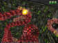
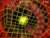
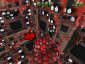
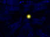
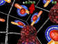
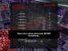
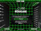

{kind=link}
{kind=link}
{kind=link}
{kind=link}
{kind=link}
{kind=link}
{kind=link}

Last modified: April 27, 2006
Code,
graphics and voice by: Kimmo "Waspwort" Kiiski, 2005
Music by: Nathaniel "DJDarkShadow" Elwood
| Download | Screenshots | Requirements | News |
Cube the Worm Game is a 3D version of the classical worm game in which you control a worm and try to eat as many points as possible before you collide with walls or other parts of the worm or the time is up. The more you eat points the longer the worm grows. See excellent reviews about this game on Game Maker Community.
Current (and the final) version is 1.11. Click
here to read changes.txt.
There are two versions available: LITE and FULL. Full version contains more
great music, more wall textures and a commentary system which lite version doesn't
contain. The other features are same in both versions. Full version will make
your game experience more fascinating!
Both versions are fully freeware!
Download FULL version (Installer
in ZIP archive, 28.0 MB)
Download LITE version (ZIP archive, 7.9 MB)
Click thumbnails to enlarge screenshots.
|  |  |  |  |  |  |  |
This game runs on Windows 98SE/2000/ME/XP and later. It does require a DirectX 8 or higher compatible graphics graphic card with at least 16MB of video memory (preferably 32 MB or more). Also a DirectX 8 or higher compatible sound card is required. DirectX version 8.0 or later is required (not included).
March 1, 2006 - The project for a new version is
closed. Version 1.11 is the final version!
December 25, 2005 - I got a database for the online highscoring
(and statistics).
December 15, 2005 - There will be a support for online highscoring
in the next version of CTWG.
November 6, 2005 - Version 1.11 is
now released!
October 30, 2005 - Version 1.10 is
now released!
October 16, 2005 - The self-extracting archive is
now available for download.
October 15, 2005 - This page is created and the first
version 1.00 is released.
Copyright © Kimmo "Waspwort" Kiiski

Last modified:
April 27, 2006